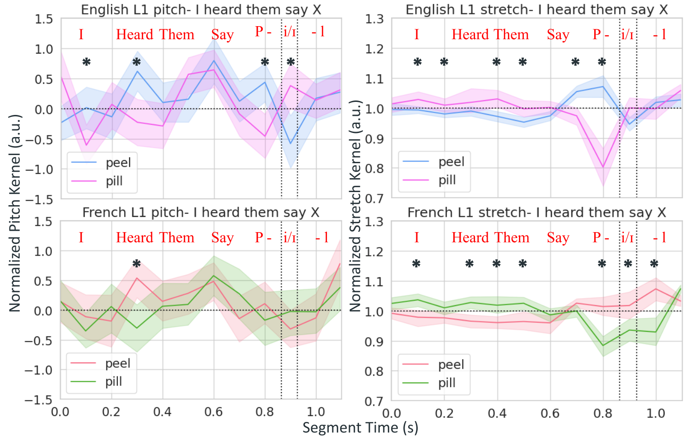

Previous Work

In our paper, psychophysical reverse-correlation was used to reconstruct L1-English and L2-English listener's mental representation of duration and pitch in tense-lax vowel contrasts in a data-driven manner. For L2-English speakers who spoke French, Mandarin and Japanese as an L1, it was found that vowel duration, but not pitch, affected perception of tense/lax vowels. This suggests that we can apply a duration mechanism to improve comprehension of this English vowel contrast when an L2 listener struggles to use the primary formant cues.